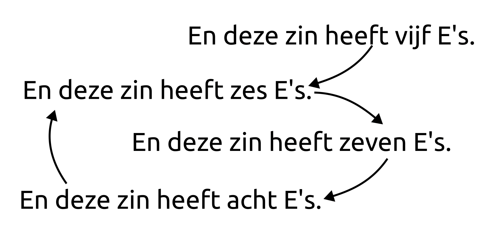

Ik heb een gedicht geschreven dat al haar eigen letteraantallen benoemt.
Zelfreferentie
Deze zin heeft vijf woorden. Klopt als een bus. Maar En deze zin heeft zeven e's. werkt niet, ik tel er acht. Dus we corrigeren het naar En deze zin heeft acht e's. Die heeft er helaas op zijn beurt maar zes. En En deze zin heeft zes e's. heeft er weer zeven! Daar komen we dus niet uit.

Zelfreferentie is als het treffen van de perfecte balans. Maak een correctie voor het ene en het andere valt om. Hoe uitgebreider de interne referenties, hoe kleiner de kans dat je puzzelen überhaubt zin heeft. Maar als je refereert aan makkelijke eigenschappen (zoals simpelweg het aantal letters) kun je er eigenlijk altijd wel een mouw aan passen. Zo denk je misschien dat vier het enige getal dat haar eigen letteraantal benoemd. Maar ik ben niet voor één gat gevangen.
[dejavusansmono*mono at 10pt] [line=1.3em] 1 bi tri vier kwint zestal zevenen achtvoud negenvoud tiendelige elfletterig twaalfdelige dertiendelige veertiendelige vijftienvoudige zestienletterige zeventienletterig Zo'n achttien letters. Zo'n negentien letters. Zin met twintig letters. En eenentwintig letters. En tweeëntwintig letters. Met drieentwintig letters. En nu vierentwintig letters. Of zeg vijfentwintig letters. Of zesentwintig, geen probleem. Zin met zevenentwintig letters. Lees hier achtentwintig letters. En nu hier negenentwintig letters. Deze zin bevat exact dertig letters. Al deze zinnen (en inclusief deze) bevatten driehonderdnegenenzeventig letters..
Geen uitdaging eigenlijk! Je hebt voldoende onafhankelijke controle over het letteraantal en het aantal-referentie dat het altijd makkelijke in te passen is.
Dus laten wat extra zelfbeschrijving toevoegen. En om het iets moeilijker maken dit als een ollekebolleke uitdrukken én een aantal karakters gebruiken dat exact in één SMS bericht past. Een nu archaïsche dichtvorm, de 160. Uit een tijd waarin een SMS 20 cent kostte.
tekens hier uitgetypt
stipt vierenveertig
syllabes geteld.
Smaakvol gestouwd in dit
negentienwoordige,
gans loze tekstje
met' grofste geweld.
Dit is overigens een leuk probleem, hoeveel zeslettergrepigheden zijn er die ook zelfreferentieel werkend gemaakt kunnen worden? Bijvoorbeeld zevenentwintigtal laat ook een puntdicht toe:
dactylus ritmeval
(rijmen beschouwende
als slechts een stunt):
vindt je ontwricht hier zo'n
zevenentwintigtal
woorden die volgen
een vorm met één punt.
Een ollekebollekewoord met een getal erin moet eigenlijk, als er een ééntal is, de zeven of negen gebruiken. Gezien dat de enige eentallige cijfers zijn die een onbeklemtoonde lettergreep hebben. Verder heeft een ollekebolleke 48 lettergrepen. Waarvan zes stuks altijd één woord moeten vormen. Dus er zijn maximaal 43 woorden mogelijk. En minimaal acht woorden (ééntje voor elke regel). Dat maakt dat er zes natuurlijke woordaantalbeschrijvingen mogelijk zijn: zeventienwoordige, negentienwoordige, zevenentwintigtal, negenentwingtigtal, zevenendertigtal, negenendertigtal.
Het bovenstaande negentienwoordige gedichtje kan overigens ook prima in zeventien, om de extreme op te zoeken. Dit laat ook weer zien dat dit soort zelfreferentie prima uitvoerbaar is. Al heb ik het mooie binnenrijm moeten laten vervallen.
tekentjes uitgetypt
stipt vierenveertig
syllabes geteld.
Smaakvol gestouwd in dit
zeventienwoordige,
tragische tekstje,
met' grofste geweld.
[title=Hofstader en Kousbroek,reference=kousbroek]
Enfin, we raken afgeleid. In 1981 Nam niemand minder dan Douglas Hofstader de column over van Martin Gardner in de de scientific american. En het zal niemand die bekend is met z'n werk verrassen dat hij als eerste column iets vertelt over zelfrefererende zinnen. In deze column nog de speelse maar niet bepaald technisch uitdagende varianten.
En zo voorts. Een jaar later, Januari 1982, krijgt deze column een vervolg na vele lezersinzendingen. De meeste van het type hierboven. Soms iets moeilijker, van bijvoorbeeld Howard Bergerson:
Maar verreweg de meest indrukwekkende inzending komt van ene Lee Sallows, een Brit die werkte aan de universiteit van Nijmegen.
Ik ben de “fool” in dit geval, het klopt! Het is na het lezen van dit column dat Rudy Kousbroek geïnspireerd raakt en een column schrijft die probeert deze zinnen te vertalen. Allereerst reproduceert hij de zin van Bergerson, maar in het Nederlands!
En hetzelfde doet hij met Lee's zin:
Wederom blijk ik de ezel, echter blijkt hier wel een fout in te zitten! Er staat dat er 15 a's zijn, maar dat zijn er 16. Zo ook 19 r'en (niet 18), en 10 z'en (niet 9). Lee Sallows zag dat ook en heeft de auteur berispt.
De maand daarop probeert Kousbroek het nog in een keer in een volgende column:
Een fool een ezel en een gek ondertussen, maar hij klopt! Kousbroek is niet tevreden met slechts evenaren, er overtroeft met het nagenoeg perfecte in keurig Nederlands, alle letters bevattend.
“Het zal Lee Sallows ongetwijfeld niet moeilijk vallen van deze zin een hemelse vertaling te maken in het Engels” Deze speldenprik nam Lee serieus op, en is maandenlang bezig geweest met het ontwikkelen van programmatuur. Maar de (super)-computers tot zijn beschikking in de jaren '80 waren niet opgewassen tegen dit probleem.
“At one stage, complaint of excessive CPU-time devoted to word games came in from the University of Nijmegen Computing Centre, whose facilities had been shamelessly pressed into service.”
Als een elektrotechnicus had 'ie echter ook nog een ander idee, een apparaat maken speciaal voor het bepalen of een gegeven zin correct is. In feite is het enkel verifieren namelijk wiskundig simpel. En een analoog circuit kan gemaakt worden dat kijkt of deze elementen balanceren. Plaats daar een teller op en je kunt dit circuit op 1 Mhz vragen stellen. Snel genoeg om de logologische ruimte te doorzoeken.
Zo overtuigd was hij dat hij een weddenschap uitzette, dat geen algoritme op een normale computer pangrammen kan genereren in de aankomende 10 jaar. Het duurde ongeveer een week voor vier verschillende mensen om de oplossing te vinden. Daarmee lijkt het probleem wellicht volledig opgelost. Maar er zijn nog vele vragen om te beantwoorden!
[title=Vervolg,reference=vervolg]
Een idee wat je kunt hebben is om ook nog alle andere typografische elementen te benoemen, neem bijvoorbeeld deze prachtige constructie van Aad van de Wetering.
Maar het benoemen van het aantal komma's, trema's, spaties en de punt is in feite geen kunst, dat aantal staat (als het goed is) vast als je begint aan zo'n zin. Het mag duidelijk zijn dat op het moment dat je vast komt te zitten, zoals in het allereerste voorbeeld, je een woordje vervangt voor een synoniem. Dit is vermoedelijk waarom deze zin enkel voor Denen is geschreven.
Dus een natuurlijkere zin is een grotere uitdaging, maar prima mogelijk:
Je zou misschien zeggen dat nu alle elementen in de zin benoemd zijn het spelletje wel klaar is, maar niets is minder waar. Een interessante uitdaging is bijvoorbeeld om alles uit te drukken in exacte percentages.
Deze zit moet natuurlijk wel 500 letters lang zijn, anders wordt het lastig om binnen die limiet de exacte percentages te beschrijven. “vijf komma drie twee acht negen vier herhalend a's” bekt net niet lekker).
Ondanks dat de bovenstaande zin 451 letters nodig heeft voor het opnoemen van alle percentages zou minder moeten kunnen, je kunt namelijk percentages ook anders opnoemen dan in decimalen. Dan kan ik zelfs het terugbrengen tot 300 letters:
Maar in feite heb ik hier alsnog honderd-en-één manieren om te prullen met de letteraantallen zonder dat ik de getallen aanpas. Zin kan ook tekst zijn, nauwkeurig kan toevallig, precies exact zijn, en geschreven gemaakt.
De meest pure vorm van deze zelf-etende slang volgt dus de volgende regels:
- De enige tekst zijn de absolute letteraantallen.
- De meervouden van de letters zijn streng, eindigt de uitspraak van een letter op een klinker dan voegen we een 's toe anders een 'en (r'en en s'en maar a's en b's). Behalve de z welke z'en en z's mag zijn.
- Het getal één mag niet gebruikt worden, anders kan ik gratis extra e's en n'en maken door letters toe te voegen die verder niet in de zin staan. (eg: één q klopt als een bus, maar voegt niets toe)
- We beschouwen de ij als een i en een j.
Je komt er snel achter dat de telwoorden maar 17 van de 26 letters in gebruik nemen. In het totaal zijn er dan 3 oplossingen, dit is een complete set.
Één met 14 verschillende letters en 95 letters in het totaal. En twee met alle 17 letters gebruikt, respectievelijk 112 en 117 letters in lengte.
Uit het feit dat er drie oplossingen zijn leid ik af dat we nog puurder kunnen zijn en de meervouden simpelweg helemaal weg kunnen laten. Er is dan één triviale oplossing, door Corstius.
Maar hier volgt de enige andere zin met deze eigenschappen. De eerste twaalf gebruikte letters spellen dwangschriftje.
Wellicht meer een tabel dan een zin. Maar hoe dan ook een unieke logologische parel. Om het makkelijker te maken de aantallen te verifieren (ik zou mijn lezer niet voor ezel uit willen maken hoe palindromisch veelbelovend dat ook is)

Dat is een unieke oplossing, dus zijn we nu klaar? Nou ik zie nog wel één reduceerstap. Sommige telwoorden (zeker twee) komen heel vaak voor. Een normaal mens zou denk ik zeggen “Twee D, A, G, S, C, H, F en J, drie Z” etc. Met meervouden zijn er dan nog twee oplossingen
En zonder, twee nog kortere.
Perfect. Als je maximaal hebt gereduceerd naar de kern van een probleem is er niets meer te doen behalve proberen expressief te worden, ik sluit af met een gedicht in strikt metrum.
Alle letters nauwkeurig geteld en oké.
In het strikt anapest ik vertel je tevree.
De hoeveelheden letters elk woordje doet mee.
Er zijn zevental o's er zijn zestiental j's.
Vier maal tien en twee i's vijf maal tien en acht t's.
Er zijn vier letter u's elf maal twaalf min drie e's.
Twee maal tien en vijf s'en een vijftiental d's.
Er zijn dertiental m'en en twee letter p's.
Drie maal tien en zes r'en en zes letter g's.
Zes maal tien en twee n'en en één letter b.
Drie maal tien en vijf l'en en acht letter w's.
Er zijn negental f'en en acht letter h's.
Er zijn dertiental z'en een negental k's.
Drie maal tien en acht a's er zijn vijf letter c's.
Nu de grote finale, een veertiental v's.
Nog te verzamelen: originele afbeelding/tekst, plus materiaal uit boek en Obsidian.